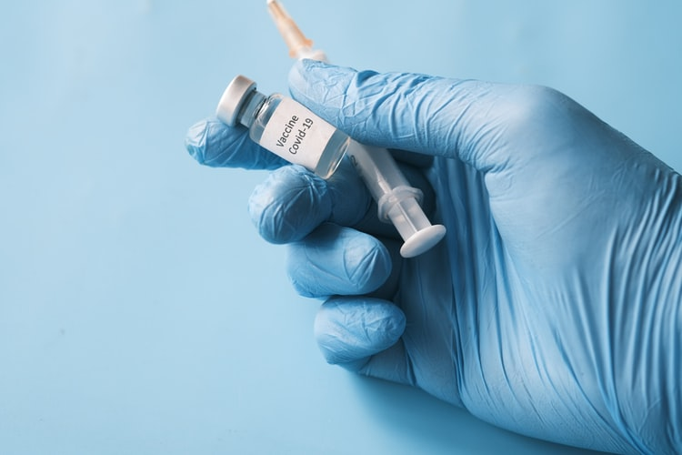
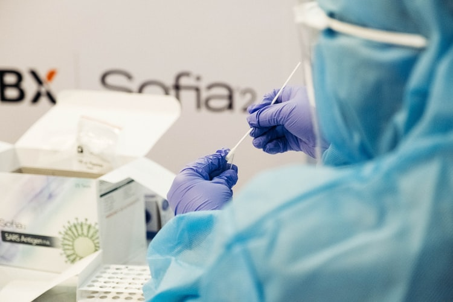
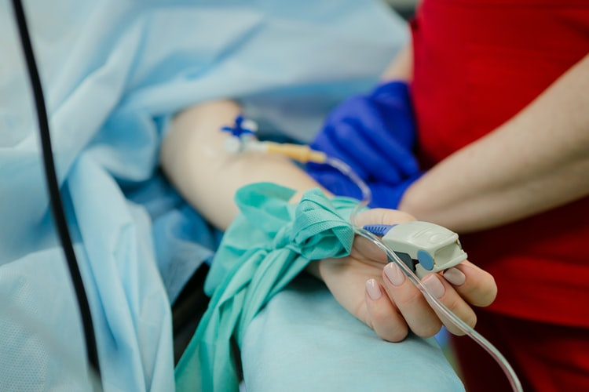

Covid-19 Stats
Top Stories

|


|


NDTV - Coronavirus36,571 Fresh Coronavirus Cases In India, Marginally Higher Than Yesterday India added 36,571 new coronavirus cases over the last 24 hours while deaths from COVID-19 rose by 540.The country's overall case load now stands at 3.23 crore, while total fatalities are at 4.33 lakhs, according to the health ministry. Read more |